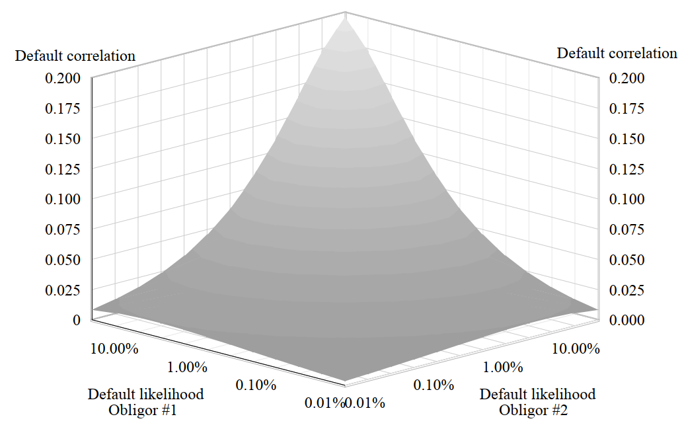
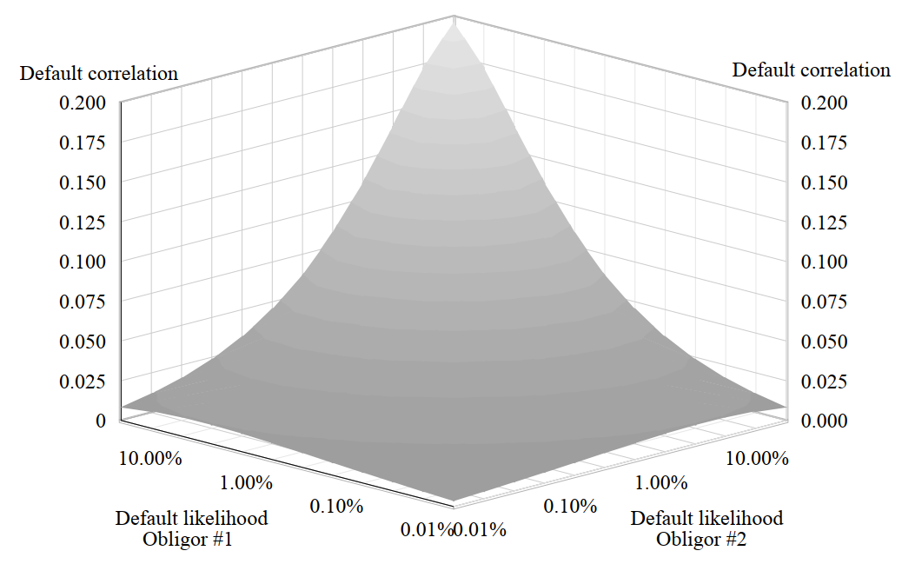

FUNDAMENTAL on Survival & Default Probabilities Link
\( \mathbb{ASSUME} \) \( \big[ \mathbb{R.V.}\big[ N \big] \big] \) : Default happens on the Year \( \big[ n,\: n =\! 1\big(1\big)\infty \big] \).
\( \mathbb{ASSUME} \) \( \big[ \mathbb{D}_n = \mathbb{PD}_{\mathbb{UNCOND},\: \mathbb{DURING}\big[n\big]} = \mathbb{P}\big[N =\! n\big] \big], \: \big[ \mathbb{S}_n =\! \mathbb{PD}_{\mathbb{UNCOND},\: \mathbb{AFTER}\big[n\big]} =\! \mathbb{P}\big[N > n \big]\big] \).
\( \mathbb{ASSUME} \) \( \big[ \mathbb{H}_n = \mathbb{PD}_{\mathbb{COND},\: \mathbb{DURING}\big[n+\!1\big],\: \mathbb{GIVEN}\big[\mathbb{NO\:DEFAULT\:TILL }\big[n\big]\big]} = \mathbb{P}\big[N =\! n+1 |\: N > n\big] =\! \rho\big] \).
So, \( \big[ D_1 =\! \rho,\: S_1 =\! \big(1 - \rho\big)\big] \).
So,
\( D_2 =\! \mathbb{P}\big[N =\! 2\big] = \mathbb{P}\big[N =\! 2 \:|\: N =\! 1\big]\mathbb{P}\big[N =\! 1\big] +\! \mathbb{P}\big[N =\! 2 \:|\: N >\! 1\big]\mathbb{P}\big[N >\! 1\big] = 0 +\!\! \rho S_1 = \big[ \rho \big(1 - \rho\big) \big] \)
\( D_3 =\! \mathbb{P}\big[N =\! 3\big] = \mathbb{P}\big[N =\! 3 \:|\: N =\! 2\big]\mathbb{P}\big[N =\! 2\big] +\! \mathbb{P}\big[N =\! 3 \:|\: N >\! 2\big]\mathbb{P}\big[N >\! 2\big] = 0 +\!\! \rho S_2 = \big[ \rho^2 \big(1 - \rho\big) \big] \).
AND,
\(\big[S_1 = D_2 +\! S_2\big] \Rightarrow S_2 =\! \big(1 -\! \rho\big) -\! \big[ \rho \big(1 -\! \rho\big) \big] =\! \big(1 - \rho\big)^2 \)
\(\big[S_2 = D_3 +\! S_3\big] \Rightarrow S_3 =\! \big(1 -\! \rho\big)^2 -\! \big[ \rho \big(1 -\! \rho\big)^2 \big] =\! \big(1 - \rho\big)^3 \).
\( \mathbb{ASSUME} \) \( \big[ \mathbb{D}_n = \mathbb{PD}_{\mathbb{UNCOND},\: \mathbb{DURING}\big[n\big]} = \mathbb{P}\big[N =\! n\big] \big], \: \big[ \mathbb{S}_n =\! \mathbb{PD}_{\mathbb{UNCOND},\: \mathbb{AFTER}\big[n\big]} =\! \mathbb{P}\big[N > n \big]\big] \).
\( \mathbb{ASSUME} \) \( \big[ \mathbb{H}_n = \mathbb{PD}_{\mathbb{COND},\: \mathbb{DURING}\big[n+\!1\big],\: \mathbb{GIVEN}\big[\mathbb{NO\:DEFAULT\:TILL }\big[n\big]\big]} = \mathbb{P}\big[N =\! n+1 |\: N > n\big] =\! \rho\big] \).
So, \( \big[ D_1 =\! \rho,\: S_1 =\! \big(1 - \rho\big)\big] \).
So,
\( D_2 =\! \mathbb{P}\big[N =\! 2\big] = \mathbb{P}\big[N =\! 2 \:|\: N =\! 1\big]\mathbb{P}\big[N =\! 1\big] +\! \mathbb{P}\big[N =\! 2 \:|\: N >\! 1\big]\mathbb{P}\big[N >\! 1\big] = 0 +\!\! \rho S_1 = \big[ \rho \big(1 - \rho\big) \big] \)
\( D_3 =\! \mathbb{P}\big[N =\! 3\big] = \mathbb{P}\big[N =\! 3 \:|\: N =\! 2\big]\mathbb{P}\big[N =\! 2\big] +\! \mathbb{P}\big[N =\! 3 \:|\: N >\! 2\big]\mathbb{P}\big[N >\! 2\big] = 0 +\!\! \rho S_2 = \big[ \rho^2 \big(1 - \rho\big) \big] \).
AND,
\(\big[S_1 = D_2 +\! S_2\big] \Rightarrow S_2 =\! \big(1 -\! \rho\big) -\! \big[ \rho \big(1 -\! \rho\big) \big] =\! \big(1 - \rho\big)^2 \)
\(\big[S_2 = D_3 +\! S_3\big] \Rightarrow S_3 =\! \big(1 -\! \rho\big)^2 -\! \big[ \rho \big(1 -\! \rho\big)^2 \big] =\! \big(1 - \rho\big)^3 \).
Average Cumulative Default Rate (%, 20Y) ACDR

Prob. that : Bond rated below Caa will default DURING 3rd year, as seen from \( \big[T=0\big] \), is : \( 38.682 -\! 29.384 =\! 9.298 \% \).
Prob. that : Bond rated below below Caa will survive UNTIL 2nd year is : \( 1 -\! 29.384 =\! 70.616 \% \).
Conditional Prob. Hazard Rate = HR that : Bond rated below Caa will default DURING 3rd year, with NO DEFAULT earlier, is : \( 9.298/70.616 =\! 13.16 \% \).
\( \left[ \left[ \frac{D_{n\:+1}}{S_n} \right] \!=\!\!\! \left[ \frac{S_{n} \:-\: S_{n\:+1}}{S_n} \right] = \rho \right] \Rightarrow \left[ \left[ \frac{V \big( t \: +dt \big) \:- V \big( t \big)}{V \big( t \big)} \right] = - \lambda \big( t \big) dt \right] \Rightarrow \left[ \left[ \frac{dV \big( t \big)}{V \big( t \big)} \right] = - \lambda \big( t \big) dt \right] \)
\( \Rightarrow \left[ V \big( t \big) = e^{-\! \int_{0}^{t} \lambda \big( \tau \big) \,d \tau} \right] \Rightarrow \left[ 1 -\! Q \big( t \big) = \left[e^{-\! \int_{0}^{t} \lambda \big( \tau \big) \,d \tau}\right] \!=\!\! \left[e^{-\! \big[ \overline {\lambda \big( t \big)} \big] t} \right]\right] \Rightarrow \left[ \overline {\lambda \big( T \big)} =\! \left[\frac{-\mathbb{LOG}\big(1-\!Q\big(T\big)\big)}{T} \right]\right] \)
BBG's Default Risk Data Link :

Estimation of Default Prob.
1
Using Corporate Bond's Spread [546]
This is Approx. formula. This formula's logic is : A Bond's CS will be equal to, Bond's Default's Value multiplied by the Default Prob. Hence, \( \big[ s \:= \big(1 - R \big) \overline {\lambda \big( T \big)} \big] \). Important obsn Link :
This is basically, 2-Factor formula i.e. CS and RR.
In above formula, We should have \( \big[ s \: \leq \overline {\lambda \big( T \big)} \big] \). However, in Real-life, this is NOT the case.
2
Using Corporate Bond's Spread - A MORE EXACT Calculation [546]
\( \mathbb{ASSUME} \) a regular coupon paying Corporate Bond with Yield \( \big[y\%\big] \) & RFR \( \big[r\%\big] \) & Life \( \big[T\big] \) years.
\( \mathbb{ASSUME} \) during the life-time, this Bond can Default at times \( \big[ T_1, T_2, ..., T_n \big] \) which, usually coincides with the Coupon paying dates.
\( \mathbb{ASSUME} \) \( \left[Q =\! \mathbb{PD}_{\mathbb{UNCOND}}/\mathbb{YEAR}_{ \big[0,\: T\big]} \right] \).
So, \( \big[ \mathbb{LGD}_{T_{i}} =\! \big( B_{r,\: T_i} - R \big) Q \big] \). Here \( \big[ B_{r,\: T_i} \big] \) is the Bond's Value if NO Default at that Time i.e. When, Bond's Value is calculated using Forward RFR.
So, the PV of above is \( \big[ \big( B_{r,\: T_i} - R \big) Q \big] e^{-r T_i} \). Hence Overall PV is \( \big[ \mathbb{LGD}_{\mathbb{PV}} =\! \sum_{i=1}^{n} \big( B_{r,\: T_i} - R \big) Q e^{-r T_i} \big] \).
So, \( \big[ \big( B_{r,\: T_0} - B_{y,\: T_0} \big) =\! \mathbb{LGD}_{\mathbb{PV}}\big] \). Use this, to calculate \( \big[ Q =\! Q_{\mathbb{RISK\:NEUTRAL}} \big] \) As, We discounted using \( \big[r\big] \).
So, if \( \big[ B_{r,\: T_0} - B_{y,\: T_0} \big] \) is HIGH then, \( \big[Q\big] \) will be HIGH (this happened during 2007 Crisis).
\( \mathbb{ASSUME} \) during the life-time, this Bond can Default at times \( \big[ T_1, T_2, ..., T_n \big] \) which, usually coincides with the Coupon paying dates.
\( \mathbb{ASSUME} \) \( \left[Q =\! \mathbb{PD}_{\mathbb{UNCOND}}/\mathbb{YEAR}_{ \big[0,\: T\big]} \right] \).
So, \( \big[ \mathbb{LGD}_{T_{i}} =\! \big( B_{r,\: T_i} - R \big) Q \big] \). Here \( \big[ B_{r,\: T_i} \big] \) is the Bond's Value if NO Default at that Time i.e. When, Bond's Value is calculated using Forward RFR.
So, the PV of above is \( \big[ \big( B_{r,\: T_i} - R \big) Q \big] e^{-r T_i} \). Hence Overall PV is \( \big[ \mathbb{LGD}_{\mathbb{PV}} =\! \sum_{i=1}^{n} \big( B_{r,\: T_i} - R \big) Q e^{-r T_i} \big] \).
So, \( \big[ \big( B_{r,\: T_0} - B_{y,\: T_0} \big) =\! \mathbb{LGD}_{\mathbb{PV}}\big] \). Use this, to calculate \( \big[ Q =\! Q_{\mathbb{RISK\:NEUTRAL}} \big] \) As, We discounted using \( \big[r\big] \).
So, if \( \big[ B_{r,\: T_0} - B_{y,\: T_0} \big] \) is HIGH then, \( \big[Q\big] \) will be HIGH (this happened during 2007 Crisis).
Different Bonds will have different Maturities. Therefore, We can have Default Prob's Term-Structure. \( \mathbb{ASSUME} \). We have Bonds with Maturities \( \big[3\mathbb{Y}, 5\mathbb{Y}, 7\mathbb{Y}\big] \). 1st is used to estimate Yearly \( \mathbb{PD} \) for \( \big[ 3\mathbb{Y} \big] \). 2nd is used to estimate Yearly \( \mathbb{PD} \) for \( \big[ 4,5\mathbb{Y} \big] \) etc.
\( \mathbb{ASSUMPTION} \) : Corporate Bond's Value only depends on \( \mathbb{PD} \). This is \( \mathbb{FALSE} \) As, it also depends on Liquidity.
3
OPTION-THEORITIC Approach : Using Equity Price - Merton's Formula
\( \mathbb{ASSUME} \) a Company has ONLY 1 Bond outstanding at time \( \big[ T \big] \). It's Equity, Value, Bond are \( \big[ E_t, \: V_t, \: B_t \big] \).
So, We must have :
\( \big[E_T = \mathbb{MAX} \big[ V_T - B_T, \: 0 \big]\big] \Rightarrow \big[ E_0 = V_0 \Phi \big( d_1 \big) - B_T e^{-rT} \Phi \big( d_2 \big) \big] \).
ALSO,
\( \left[ \frac{dE_0}{E_0} =\! \Phi \big( d_1 \big) \frac{dV_0}{V_0} \frac{V_0}{E_0} \right] \Rightarrow \left[ \sigma_E = \sigma_V \Phi \big( d_1 \big) \frac{V_0}{E_0} \right] \) Link.
From, above 2 Equn, We estimate : \( \big[ V_0, \: \sigma_V \big] \). ALSO, \( \big[ \mathbb{PD_{\mathbb{RISK\:NEUTRAL}}} =\! \Phi \big( \!\!-\!\!d_2 \big) \big] \).
So, We must have :
\( \big[E_T = \mathbb{MAX} \big[ V_T - B_T, \: 0 \big]\big] \Rightarrow \big[ E_0 = V_0 \Phi \big( d_1 \big) - B_T e^{-rT} \Phi \big( d_2 \big) \big] \).
ALSO,
\( \left[ \frac{dE_0}{E_0} =\! \Phi \big( d_1 \big) \frac{dV_0}{V_0} \frac{V_0}{E_0} \right] \Rightarrow \left[ \sigma_E = \sigma_V \Phi \big( d_1 \big) \frac{V_0}{E_0} \right] \) Link.
From, above 2 Equn, We estimate : \( \big[ V_0, \: \sigma_V \big] \). ALSO, \( \big[ \mathbb{PD_{\mathbb{RISK\:NEUTRAL}}} =\! \Phi \big( \!\!-\!\!d_2 \big) \big] \).
4
ACCOUNTING-ANALYTIC Approach : Most Used Approach
This uses Financial Ratios e.g. Leverage Measures, Coverage Measures, Earnings & CFs.
S&P ALSO gives : Historical \( \big[\mathbb{PD}\big] \), for each Credit-Ratings.
S&P ALSO gives : Historical \( \big[\mathbb{PD}\big] \), for each Credit-Ratings.
5
STATISTICAL-ANALYTIC Approach : Statistical Calculation
This gives : Ranking of \( \big[\mathbb{PD}_{\mathbb{ANTICIPATED}}\big] \). Then, We will convert it to \( \big[\mathbb{PD}_{}\big] \). Like, the Discriminant Analysis will give Continuous Numeric Score. Then, We will convert it to \( \big[\mathbb{PD}_{}\big] \).
6
Using Asset Swap's Spread [548]
A Bond's ASS \( \big[ y_{\mathbb{ASS}} \% \big] \) estimates : Spread between Bond's Yield & LIBOR-SWAP Curve i.e. RFR. With Bond's ASS \( \big[ y_{\mathbb{ASS}} \% \big] \) & Coupon \( \big[ c \% \big] \), We have : Below Scenarios -
ALL above basically says : Bond's ASS's PV \( \mathbb{EQUALS} \) : HOW this Bond's Price \( \mathbb{EXCEEDS} \) SIMILAR Risk-Free Bond's Price.
Therefore using this Info. We can calculate \( \big[ B_{r,\: T_0} - B_{y,\: T_0} \big] \) hence, \( \big[ Q \big] \).
This Bold sells \( \mathbb{PAR} \)
A Swap with this Bond will exchange : This Bond's \( \big[ c \% \big] \) w.r.t. \( \big[ r +\! y_{\mathbb{ASS}} \big] \% \).
This Bold sells \( \mathbb{DISCOUNT} \)
A Swap with this Bond will exchange : This Bond's \( \big[ c \% +\! \mathbb{DISCOUNT} \big] \) w.r.t. \( \big[ r +\! y_{\mathbb{ASS}} \big] \% \).
This Bold sells \( \mathbb{PREMIUM} \)
A Swap with this Bond will exchange : This Bond's \( \big[ c \% -\! \mathbb{PREMIUM} \big] \) w.r.t. \( \big[ r +\! y_{\mathbb{ASS}} \big] \% \).
ALL above basically says : Bond's ASS's PV \( \mathbb{EQUALS} \) : HOW this Bond's Price \( \mathbb{EXCEEDS} \) SIMILAR Risk-Free Bond's Price.
Therefore using this Info. We can calculate \( \big[ B_{r,\: T_0} - B_{y,\: T_0} \big] \) hence, \( \big[ Q \big] \).
Compare : Various PDs [548]
Generally, \( \big[ \mathbb{PD}_{\mathbb{HIST}} \leq \mathbb{PD}_{\mathbb{BOND\:IMP.}} \big] \).
This \( \mathbb{DIFFERENCE} \) is \( \mathbb{LARGE} \) during Credit-Crisis due to, Flight-For-Safety.
From, Our ACDR Table, \( \left[ \mathbb{HR}_{\mathbb{HIST},\: 7\mathbb{Y},\: \mathbb{A}} =\: \overline {\lambda \big( 7\mathbb{Y} \big)} =\! \left( \frac{-\mathbb{LOG}\big(1-\!1.179/100\big)}{7} \right) =\: 0.0017 \right] \).
Now, We estimate \( \big[ \mathbb{HR}_{\mathbb{BOND\:IMP.},\: 7\mathbb{Y},\: \mathbb{A}} \big] \). We use, Yields Info. published by Merrill Lynch. These Bonds have life of \( \big[ 7\mathbb{Y} \big] \).
So, \( \left[ \mathbb{HR}_{\mathbb{BOND\:IMP.},\: 7\mathbb{Y},\: \mathbb{A}} =\! \frac{s}{1 \:-\:R} =\! \frac{5.995\% - 5.308\%}{1 \:-\:40\%} =\! 0.01145 \right] \). So, \( \big[ \mathbb{HR}_{\mathbb{HIST}} \leq \mathbb{HR}_{\mathbb{BOND\:IMP.}} \big] \).
This \( \mathbb{DIFFERENCE} \) is \( \mathbb{LARGE} \) during Credit-Crisis due to, Flight-For-Safety.
From, Our ACDR Table, \( \left[ \mathbb{HR}_{\mathbb{HIST},\: 7\mathbb{Y},\: \mathbb{A}} =\: \overline {\lambda \big( 7\mathbb{Y} \big)} =\! \left( \frac{-\mathbb{LOG}\big(1-\!1.179/100\big)}{7} \right) =\: 0.0017 \right] \).
Now, We estimate \( \big[ \mathbb{HR}_{\mathbb{BOND\:IMP.},\: 7\mathbb{Y},\: \mathbb{A}} \big] \). We use, Yields Info. published by Merrill Lynch. These Bonds have life of \( \big[ 7\mathbb{Y} \big] \).
So, \( \left[ \mathbb{HR}_{\mathbb{BOND\:IMP.},\: 7\mathbb{Y},\: \mathbb{A}} =\! \frac{s}{1 \:-\:R} =\! \frac{5.995\% - 5.308\%}{1 \:-\:40\%} =\! 0.01145 \right] \). So, \( \big[ \mathbb{HR}_{\mathbb{HIST}} \leq \mathbb{HR}_{\mathbb{BOND\:IMP.}} \big] \).
WHY Corporate Bond Traders earn MORE Return then RFR ??? [551]
There are MANY Reasons for that :
1
Corporate Bonds are Illiquid. So, Traders demands HIGH Return.
2
Corporate Bonds Traders weigh Depression Scenarios MORE than, Historical Realisations.
3
There is Sys. Risk i.e. Default from one Bond will have Ripple effect to Default from Another Bond. Also Unlike Equity, the NonSys. Risk can NOT be diversified-away because, Bonds' Return is VERY Skewed i.e. \( \big[99\%\big] \) Prob. for \( \big[7\%\big] \) Return BUT, \( \big[1\%\big] \) Prob. for \( \big[-\!\!60\%\big] \) Return due to Default. So, for Diversification benefit, We need VERY LARGE number of Bonds. So, Bond Traders will earn Extra Return to bear this Risk.
Adjust : Derivative's Value for Counterparty PD i.e. cVA
\( \mathbb{ASSUME} \) I have a Derivative that lasts till time \( \big[ T \big] \). It's Default can happen at time \( \big[ T_1, T_2, ..., T_n=T \big] \).
If, there is NO Default then, this Derivative's Value is \( \big[ f_{T_i} \big] \).
Here, My Exposure at time \( \big[ T_i \big] \) is equal to, the Potential Loss : \( \mathbb{MAX} \big[ f_{T_i}, 0 \big] \).
So, \( \big[ \mathbb{LGD}_{\mathbb{RISK\:NEUTRAL}} = \sum_{i=1}^{n} q_{T_i} \big( 1-R \big) \mathbb{E} \big[ \mathbb{MAX} \big[ f_{T_i}, 0 \big] \big] e^{-\!r_{T_i}} \big] \), \( \big[ q_{T_i} = \mathbb{PD}_{\mathbb{RISK\:NEUTRAL}, \: T_i} \big] \). This Value to be deducted from the Derivative's Value with NO Default. Hence the cVA.
\( \big[ q_{T_i} \big] \) is is INDEP. of the Derivative's Value.
\( \mathbb{ASSUME} \) My Derivative's ONLY Payoff is at time \( \big[ T \big] \) then, the above cVA will be \( \big[ f_{T_0} \sum_{i=1}^{n} q_{T_i} \big( 1-R \big) \big] \). It is EASY to understand that. So, the Derivative's Adjusted Value will be \( \big[ f^{*}_{T_0} = f_{T_0} - f_{T_0} \sum_{i=1}^{n} q_{T_i} \big( 1-R \big) \big] \).
One such Derivative is ZCB, So \( \big[ B^{*}_{T_0} = B_{T_0} - B_{T_0} \sum_{i=1}^{n} q_{T_i} \big( 1-R \big) \big] \). Hence We have \( \left[ \frac{f^{*}_{T_0}}{B^{*}_{T_0}} \right] =\! \left[ \frac{f_{T_0}}{B_{T_0}} \right] \).
This gives \( \big[ f^{*}_{T_0} = f_{T_0} e^{- \big( y^{*} - y \big) T } \big] \). Here, \( \big[ y^{*}, y \big] \) are the Yields for My Counterparty's ZCB and Risk-Free ZCB.
If, there is NO Default then, this Derivative's Value is \( \big[ f_{T_i} \big] \).
Here, My Exposure at time \( \big[ T_i \big] \) is equal to, the Potential Loss : \( \mathbb{MAX} \big[ f_{T_i}, 0 \big] \).
So, \( \big[ \mathbb{LGD}_{\mathbb{RISK\:NEUTRAL}} = \sum_{i=1}^{n} q_{T_i} \big( 1-R \big) \mathbb{E} \big[ \mathbb{MAX} \big[ f_{T_i}, 0 \big] \big] e^{-\!r_{T_i}} \big] \), \( \big[ q_{T_i} = \mathbb{PD}_{\mathbb{RISK\:NEUTRAL}, \: T_i} \big] \). This Value to be deducted from the Derivative's Value with NO Default. Hence the cVA.
\( \big[ q_{T_i} \big] \) is is INDEP. of the Derivative's Value.
\( \mathbb{ASSUME} \) My Derivative's ONLY Payoff is at time \( \big[ T \big] \) then, the above cVA will be \( \big[ f_{T_0} \sum_{i=1}^{n} q_{T_i} \big( 1-R \big) \big] \). It is EASY to understand that. So, the Derivative's Adjusted Value will be \( \big[ f^{*}_{T_0} = f_{T_0} - f_{T_0} \sum_{i=1}^{n} q_{T_i} \big( 1-R \big) \big] \).
One such Derivative is ZCB, So \( \big[ B^{*}_{T_0} = B_{T_0} - B_{T_0} \sum_{i=1}^{n} q_{T_i} \big( 1-R \big) \big] \). Hence We have \( \left[ \frac{f^{*}_{T_0}}{B^{*}_{T_0}} \right] =\! \left[ \frac{f_{T_0}}{B_{T_0}} \right] \).
This gives \( \big[ f^{*}_{T_0} = f_{T_0} e^{- \big( y^{*} - y \big) T } \big] \). Here, \( \big[ y^{*}, y \big] \) are the Yields for My Counterparty's ZCB and Risk-Free ZCB.
This shows that: Any European style Derivative Credit-Adjusted Value can be calculated by -
Increase the Discounting Rate appropriately.
Increase the Discounting Rate appropriately.
WRONG WAY RISK
Credit-Exposure depends -VEly on Counterparty's Credit-Rating.
\( \mathbb{ASSUME} \) I have a Swap w.r.t. GOLD-Mining Company Where, I pay GOLD Price & receive Fixed. If, GOLD's Price falls then, My Credit-Exposure with increase. BUT, My Counterparty's Credit-Rating will fall.
Credit-Exposure depends -VEly on Counterparty's Credit-Rating.
\( \mathbb{ASSUME} \) I have a Swap w.r.t. GOLD-Mining Company Where, I pay GOLD Price & receive Fixed. If, GOLD's Price falls then, My Credit-Exposure with increase. BUT, My Counterparty's Credit-Rating will fall.
ASSET VALUE MODEL : Migration-Probabilities' Changes' Joint-Dist [JP-101]
\( \mathbb{ASSUME} \) a Process : Company's Asset Value //AV//.
This Process's Changes drives Credit-Ratings' Changes because, this determines : Company's Ability to pay Debts.
Credit-Rating means : Long Term Unsecured Credit Rating [JP-58].
This Process's Changes drives Credit-Ratings' Changes because, this determines : Company's Ability to pay Debts.
Credit-Rating means : Long Term Unsecured Credit Rating [JP-58].
\( \mathbb{ASSUME} \) AVs are Independent. Hence, \( \big[ \mathbb{PD}_{i, \:j} = \mathbb{PD}_{i} \times \mathbb{PD}_{j} \big] \).
\( \mathbb{ASSUME} \) AVs are Perfect CORR. Hence, \( \big[ \mathbb{PD}_{i, \:j} = \mathbb{PD}_{i} \big] \).
\( \mathbb{ASSUME} \) AVs are Perfect CORR. Hence, \( \big[ \mathbb{PD}_{i, \:j} = \mathbb{PD}_{i} \big] \).
1
Estimate : Asset CORR - APPROX. 30%
2
Asset CORR ⇥ Default CORR
\(\left[ \rho_{i,\: j,\: \mathbb{DEFAULT}} =\! \left[\frac{\big(p_{i,\:j\: \mathbb{DEFAULT}}\big) \:-\: \big(p_{i\: \mathbb{DEFAULT}}\big)\big(p_{j\: \mathbb{DEFAULT}}\big)}{\sqrt{p_{i\: \mathbb{DEFAULT}} \big(1\:-\:p_{j\: \mathbb{DEFAULT}}\big)p_{j\: \mathbb{DEFAULT}} \big(1\:-\:p_{i\: \mathbb{DEFAULT}}\big)}}\right]\right] \)
i.e. \( \big[ \rho_{i,\: j,\: \mathbb{AV\:CHANGE}} \rightarrow \rho_{i,\: j,\: \mathbb{DEFAULT}} \big] \). Typically, \( \big[ 60\% \rightarrow 4\% \big] \).
Hence, the \(\big[ \mathbb{CORR} \big]\) getting BIG LOWER. Below shows that : For Junk Bonds, the DEFAULTs are HIGH CORRed -

i.e. \( \big[ \rho_{i,\: j,\: \mathbb{AV\:CHANGE}} \rightarrow \rho_{i,\: j,\: \mathbb{DEFAULT}} \big] \). Typically, \( \big[ 60\% \rightarrow 4\% \big] \).
Hence, the \(\big[ \mathbb{CORR} \big]\) getting BIG LOWER. Below shows that : For Junk Bonds, the DEFAULTs are HIGH CORRed -

If \( \big[ \rho_{i,\: j,\: \mathbb{CREDIT\:EVENT}} \rightarrow \epsilon \big] \) then, Credit-Risk is Low [51-JP].
3
Estimate VaR : SIMULATION [JP-101]
EASY !!! We have, \( \left[ \begin{bmatrix} \:R_{1,\: \mathbb{AV\:CHANGE}}\: \\ \:R_{2,\: \mathbb{AV\:CHANGE}}\: \\ ... \\ \:R_{N,\: \mathbb{AV\:CHANGE}}\: \end{bmatrix} \sim \mathbb{N} \big(0, \big[\big[\rho_{i,\: j,\: \mathbb{AV\:CHANGE}}\big]\big]\big)\right] \) because, \(\mathbb{SD}\) does NOT matter.
So, We draw Random Numbers form Above Distn. Then, based on the Thresholds, We will get New Credit-Ratings. Hence, We revalue Our Portfolio and calculate VaR.
We ALSO need to simulate the RR. This is \(\big[ \mathbb{BETA\:{DIST}^n} \big]\). This is \(\mathbb{INDEP.}\) of AV.
Un-Expected Loss : Credit-Portfolio's Future-Loss's Volatility [76-JP].
So, We draw Random Numbers form Above Distn. Then, based on the Thresholds, We will get New Credit-Ratings. Hence, We revalue Our Portfolio and calculate VaR.
We ALSO need to simulate the RR. This is \(\big[ \mathbb{BETA\:{DIST}^n} \big]\). This is \(\mathbb{INDEP.}\) of AV.
Un-Expected Loss : Credit-Portfolio's Future-Loss's Volatility [76-JP].
4
Credit-Risk : Different Types of Credit-Instruments [JP-58]
1
Receivable / Trade-Credit
Company have due-Payment from Customer in Future Date i.e. Receivable Date //RD//.
If \( \big[T_{\mathbb{RD}} \leq\! T_{\mathbb{RISK\:HORI}}\big] \) then, Risk-Esposure's Future-Value : \( \big[ \big[\mathbb{FV}\big] \: \mathbb{OR} \: \big[\mathbb{DEFAULT}\big] \big] \)
If \( \big[T_{\mathbb{RD}} >\! T_{\mathbb{RISK\:HORI}}\big] \) then, \( \big[ \mathbb{RECEIVALE} =\! \mathbb{ZCB} \big] \).
If \( \big[T_{\mathbb{RD}} \leq\! T_{\mathbb{RISK\:HORI}}\big] \) then, Risk-Esposure's Future-Value : \( \big[ \big[\mathbb{FV}\big] \: \mathbb{OR} \: \big[\mathbb{DEFAULT}\big] \big] \)
If \( \big[T_{\mathbb{RD}} >\! T_{\mathbb{RISK\:HORI}}\big] \) then, \( \big[ \mathbb{RECEIVALE} =\! \mathbb{ZCB} \big] \).
2
Commitment
Obligor has : Maximum Loan Limit & Actual Loan \( \big[ \mathbb{L}_{\mathbb{MAX}},\: \mathbb{L}\big] \).